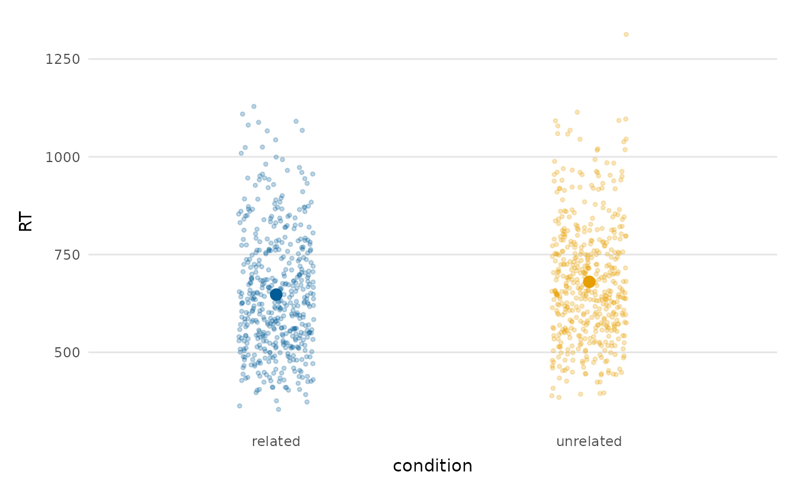
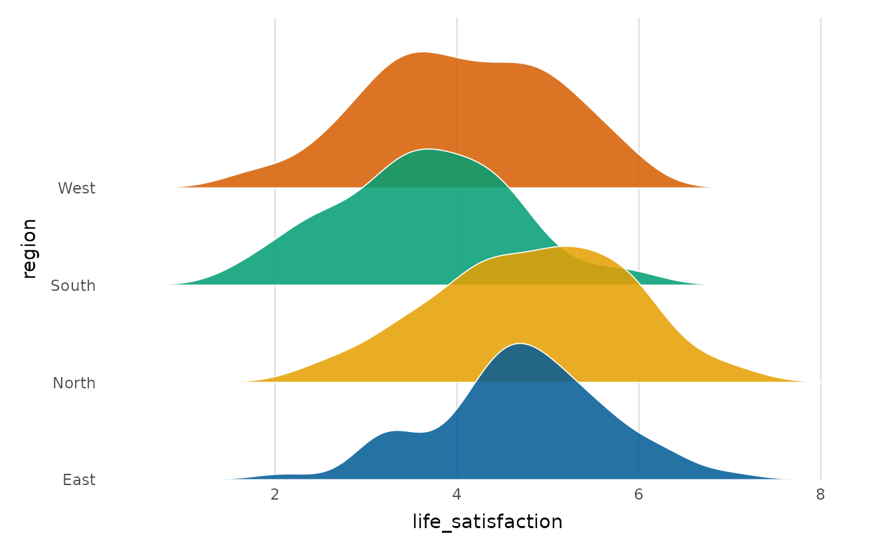
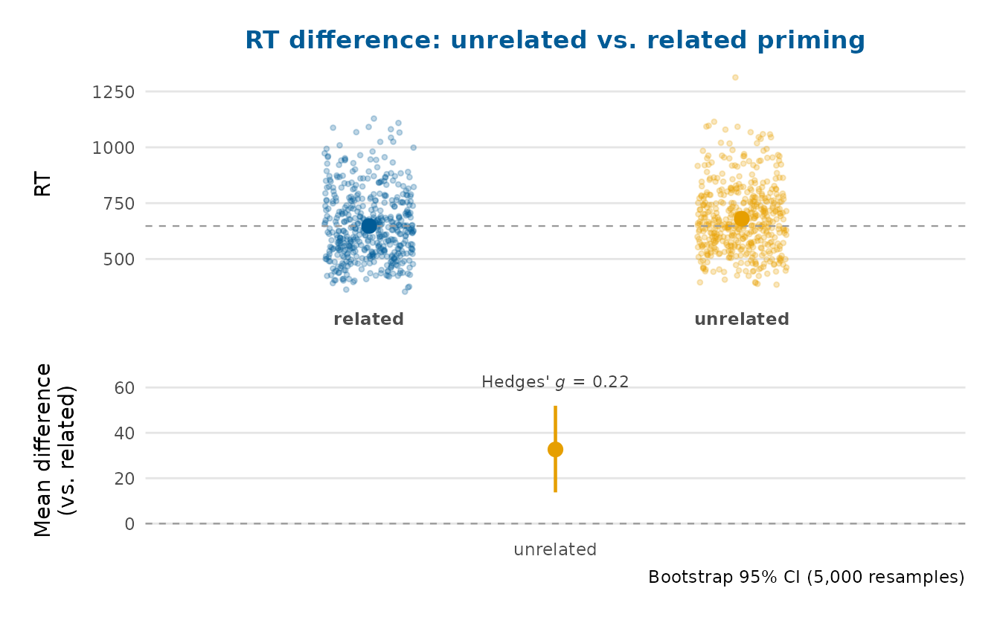
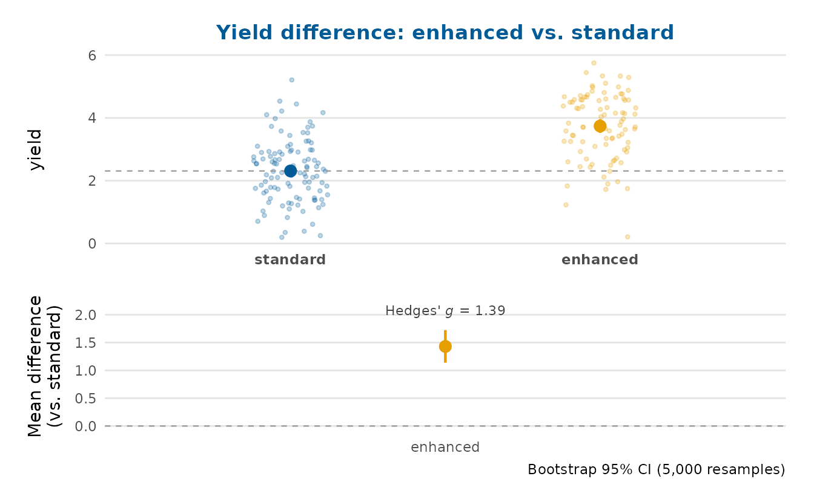
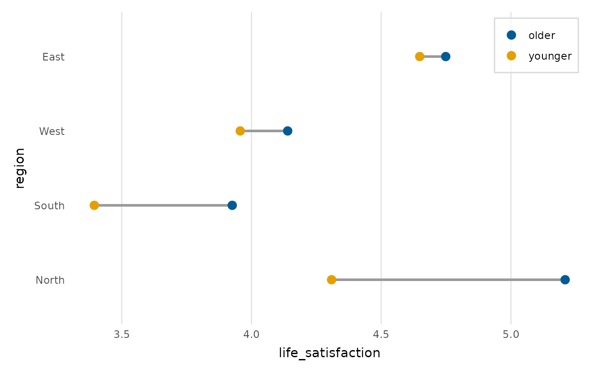
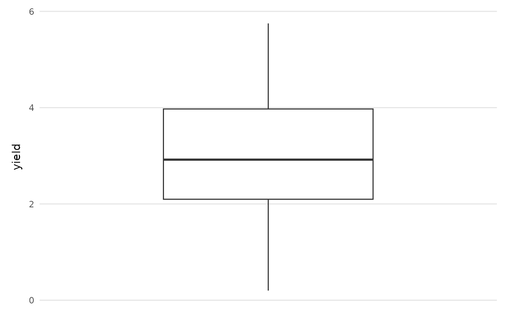
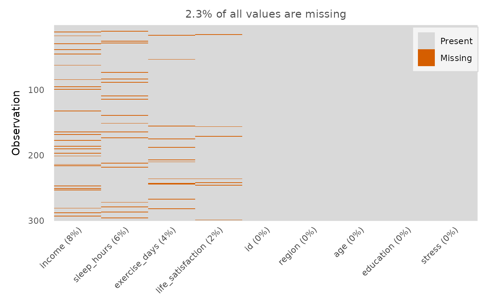
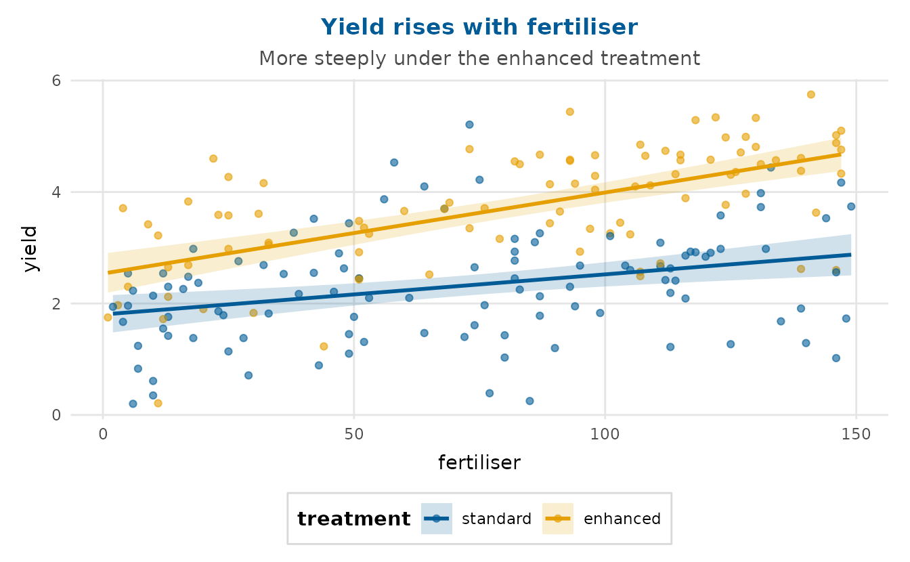
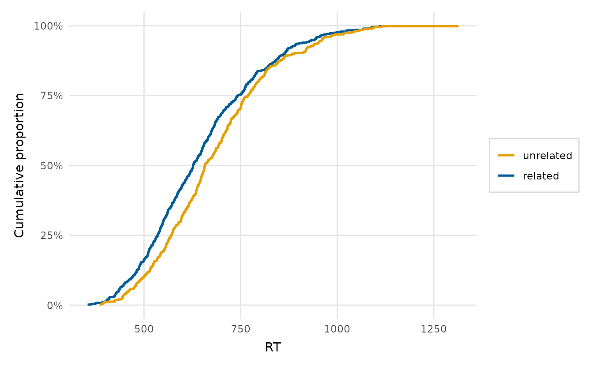
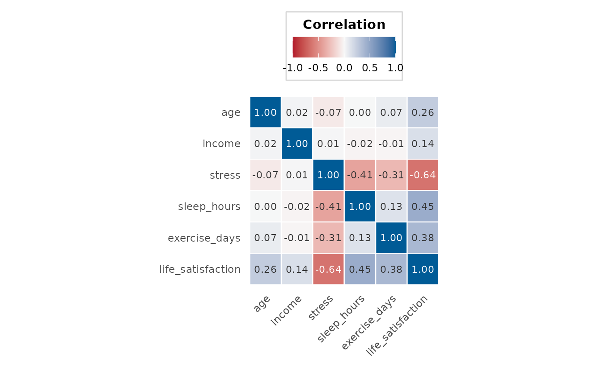

depictr provides a coherent set of exploratory plots, estimation
plots and a descriptive table, all sharing the package theme and
palette. Column names can be given quoted or unquoted. The examples use
the bundled lexical_decision, wellbeing_survey
and crop_yield datasets. A closing section shows how to
customise any of these plots with ordinary ggplot2 code.
One variable
explore_distribution() for a numeric variable,
explore_categorical() for a categorical one. A unimodal
density leaves its upper corners empty, so
legend_inside = TRUE tucks the colour legend into the
top-right rather than spending a right-hand margin on it. Several plots
take this argument; it is off by default because the empty corner
depends on the data.
explore_distribution(lexical_decision, RT, group = condition, type = "density",
legend_inside = TRUE)
An overlay gets crowded once there are several groups, so
facet = TRUE gives each group its own panel:
explore_distribution(wellbeing_survey, life_satisfaction, group = region,
type = "both", facet = TRUE)
ecdf_plot() is a bin-free alternative: the empirical
cumulative distribution lets you read medians and quantiles straight off
the curve and makes a shift between groups obvious (here the related
condition is faster throughout).
ecdf_plot(lexical_decision, RT, group = condition,
reference_quantiles = c(0.25, 0.5, 0.75), legend_inside = TRUE)
explore_categorical(wellbeing_survey, education, group = region,
proportion = TRUE, position = "dodge")
Two variables, any types
explore_bivariate() selects the appropriate plot
automatically: a scatter plot for two numeric variables, box plots for a
numeric variable against a categorical one, and a filled bar chart for
two categorical variables.
explore_bivariate(lexical_decision, condition, RT)
For a focused scatter with a fitted trend, use
scatter_trend(). The crop-yield trial has a real
fertiliser-by-treatment interaction, visible here as two diverging
slopes.
scatter_trend(crop_yield, fertiliser, yield, group = treatment)
Many variables at once
explore_pairs() is a scatter-plot matrix;
correlation_heatmap() condenses the same information into a
single coloured grid.
explore_pairs(crop_yield, cols = c("rainfall", "fertiliser", "soil_ph", "yield"))
correlation_heatmap(wellbeing_survey)
reorder = TRUE orders the variables by hierarchical
clustering, so blocks of mutually correlated variables sit together and
the structure is easier to read:
correlation_heatmap(wellbeing_survey, reorder = TRUE)
Distributions across groups
raincloud_plot() shows the density, the box summary and
the raw points together, and group_comparison_plot() adds
the group means with confidence intervals over the raw data. By showing
the estimate alongside its uncertainty, the latter conveys whether the
groups differ more faithfully than a bar chart.
raincloud_plot(lexical_decision, RT, group = condition)
group_comparison_plot(lexical_decision, RT, condition)
To compare the shape of a distribution across several groups
at once, ridgeline_plot() stacks one partially overlapping
density per group:
ridgeline_plot(wellbeing_survey, life_satisfaction, region)
Estimation plots: effect size, not just a p-value
An estimation plot puts the effect size and its uncertainty
at the centre of the comparison. estimation_plot() draws
the classic Gardner-Altman two-group plot: the raw data with group means
on top, and the mean difference with a bootstrap
confidence interval beneath, aligned so a difference of zero sits under
the reference group’s mean. With two groups it also annotates a
standardised effect size (Hedges’ g by default).
set.seed(1)
estimation_plot(lexical_decision, RT, condition,
title = "RT difference: unrelated vs. related priming")
group_comparison_plot(differences = TRUE) is the same
idea reached from the group-means plot: it appends the difference panel,
turning a means comparison into a full estimation plot. With more than
two groups every other group is compared against a chosen reference (a
Cumming plot).
set.seed(1)
group_comparison_plot(crop_yield, yield, treatment, differences = TRUE,
title = "Yield difference: enhanced vs. standard")
Comparing two groups across categories
dumbbell_plot() compares one value between two groups
across a set of categories: the two group values per category are joined
by a segment, so the size and direction of each gap is clear at a
glance. Here it contrasts younger and older respondents’ life
satisfaction by region.
wb <- wellbeing_survey
wb$age_group <- ifelse(wb$age < median(wb$age), "younger", "older")
dumbbell_plot(wb, region, life_satisfaction, age_group, legend_inside = TRUE)
Data quality: outliers and missingness
outlier_plot(crop_yield, yield)
wellbeing_survey has informative missingness –
income is missing more often at higher stress – so the missingness map
is worth a look before modelling.
missingness_map(wellbeing_survey, legend_inside = TRUE)
A descriptive summary table
summary_table() builds a “Table 1”: mean (SD) for
numeric variables, counts and percentages for categorical ones,
optionally by group. The first row always reports the sample size
(N), and any variable with missing values gets a
Missing, n (%) row – both visible here for the wellbeing
survey. It returns a plain data frame, ready for
knitr::kable().
tab <- summary_table(
wellbeing_survey,
vars = c("life_satisfaction", "income", "stress", "education"),
group = "region"
)
knitr::kable(tab)| variable | statistic | Overall | East | North | South | West |
|---|---|---|---|---|---|---|
| N | 300 | 69 | 82 | 67 | 82 | |
| life_satisfaction | Mean (SD) | 4.4 (1.0) | 4.6 (1.0) | 4.5 (1.1) | 4.0 (1.0) | 4.3 (1.0) |
| Missing, n (%) | 7 (2%) | 1 (1%) | 3 (4%) | 1 (1%) | 2 (2%) | |
| income | Mean (SD) | 31126.9 (13354.8) | 30960.9 (12789.8) | 31706.4 (13884.6) | 29459.5 (12954.0) | 31955.4 (13700.7) |
| Missing, n (%) | 25 (8%) | 7 (10%) | 6 (7%) | 8 (12%) | 4 (5%) | |
| stress | Mean (SD) | 4.0 (1.3) | 3.9 (1.2) | 3.8 (1.5) | 4.3 (1.2) | 3.9 (1.3) |
| education | secondary | 140 (47%) | 31 (45%) | 37 (45%) | 33 (49%) | 39 (48%) |
| undergraduate | 113 (38%) | 28 (41%) | 29 (35%) | 22 (33%) | 34 (41%) | |
| postgraduate | 47 (16%) | 10 (14%) | 16 (20%) | 12 (18%) | 9 (11%) |
Customising and extending the plots
Every depictr function returns a plain ggplot2 object
(composite figures return a patchwork), so you can keep
adding layers, scales, labels and theme tweaks with the usual
+:
library(ggplot2)
scatter_trend(crop_yield, fertiliser, yield, group = treatment) +
labs(title = "Yield rises with fertiliser",
subtitle = "More steeply under the enhanced treatment") +
theme(legend.position = "bottom")
Tidying the legend
depictr centres a legend title over its keys by default. When the
levels speak for themselves, though, the title is just clutter – drop it
by mapping it to NULL. Reversing a discrete colour legend
at the same time makes it read top-to-bottom in the order the curves are
stacked:
ecdf_plot(lexical_decision, RT, group = condition) +
labs(colour = NULL) +
guides(colour = guide_legend(reverse = TRUE))
Moving the legend into the plot
Several plots take legend_inside = TRUE to tuck the
legend into a corner they usually leave empty (see
e.g. ?ecdf_plot). For any plot that does not, the same move
is one theme() call. A dodged bar chart, for instance,
leaves the top-right clear when the right-most category is short, so the
legend fits there – and because the regions are self-evident we drop the
title too (with element_blank(), since this plot sets the
legend name on its fill scale):
explore_categorical(wellbeing_survey, education, group = region,
proportion = TRUE, position = "dodge") +
theme(legend.position = "inside",
legend.position.inside = c(0.98, 0.98),
legend.justification = c(1, 1),
legend.title = element_blank())
Built-in layout controls
Many functions also expose layout controls directly.
explore_distribution(facet = TRUE) and
ridgeline_plot() separate groups,
correlation_heatmap(reorder = TRUE) clusters variables, and
the model-estimate plots take facet and
standardise to keep coefficients on very different scales
legible – see vignette("model-estimates").